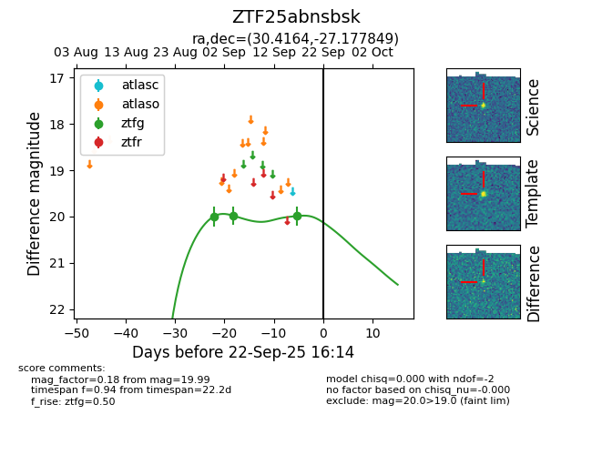
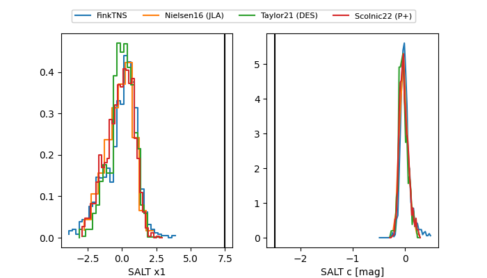

FINK: ZTF25abnsbsk
Lasair: ZTF25abnsbsk
ALeRCE: ZTF25abnsbsk
ZTF25abnsbsk (ztf,fink)
equatorial (ra, dec) = (30.4164,-27.17785)
galactic (l, b) = (217.1436,-74.39078)


last ztfg=19.99
3 ztfg detections